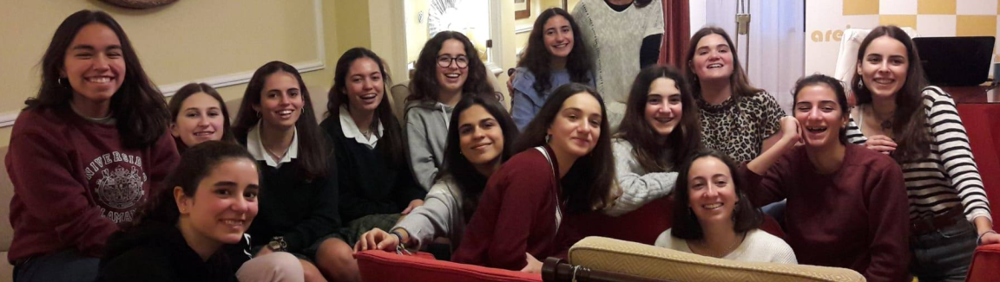
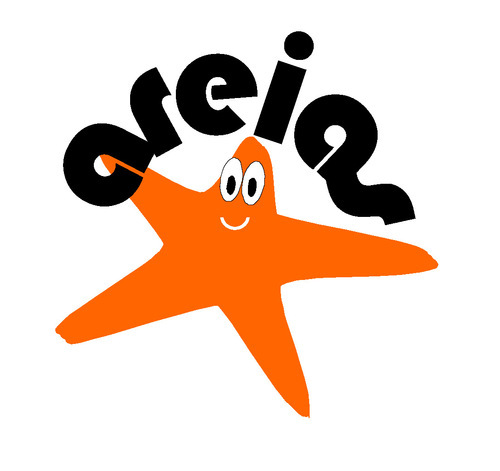

Clube das Areias


Donativos
Transferências bancárias
ASSOCIAÇÃO CULTURAL DAS AREIAS
PT50 0033 0000 45352729756 05 (Millennium bcp)
SWIFT/BIC: BCOMPTPL
Presume-se que prescinde do Recibo de donativo sempre que passem mais de 30 dias sem o solicitar.
Contactos
assculturaldasareias.org
AssCulturalAreias
areiasonline
+351 21 468 05 41
cc.areias@gmail.com
Rua João Pereira da Rosa 403
2765-533 Estoril
Missão e objetivos
O Clube das Areias é um centro educativo de actividades extra-curriculares promovido por pais para os tempos livres das filhas; um lugar onde se reforça a formação humana e espiritual que recebem em casa.
Entidades promotoras
A atividade do Clube é responsabilidade da Associação Cultural das Areias, pessoa coletiva com o NIF 508417015 e sede na Rua João Pereira da Rosa 403, 2765-533 Estoril.
Direção
Diretora
Maria da Conceição Marrocos, Farmacêutica
Subdiretora
Vanda Santos, Advogada
Secretária
Teresa Pimenta, Professora